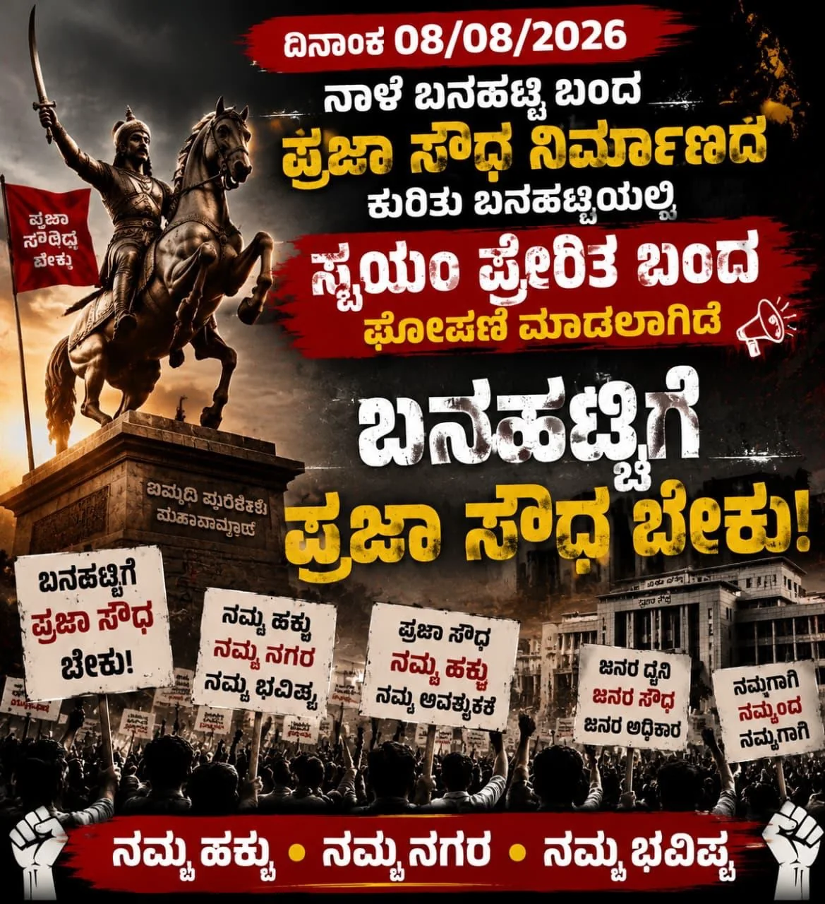

01
ಬನಹಟ್ಟಿ ಬಂದ್ · Banahatti Bandh
ಪ್ರಜಾ ಸೌಧಕ್ಕಾಗಿ ಬನಹಟ್ಟಿ ಒಂದಾಗಿದೆ
ಬನಹಟ್ಟಿಯಲ್ಲಿ ತಾಲೂಕು ಪ್ರಜಾ ಸೌಧ ನಿರ್ಮಿಸಬೇಕು ಎಂಬ ಜನರ ಒಕ್ಕೊರಲ ಬೇಡಿಕೆಗೆ ಬೆಂಬಲವಾಗಿ 08 ಆಗಸ್ಟ್ 2026, ಶನಿವಾರ ಬನಹಟ್ಟಿ ಬಂದ್ಗೆ ಕರೆ ನೀಡಲಾಗಿದೆ. ಎಲ್ಲ ನಾಗರಿಕರು, ವ್ಯಾಪಾರಸ್ಥರು, ಸಂಘ-ಸಂಸ್ಥೆಗಳು ಮತ್ತು ಯುವಕರು ಶಾಂತಿಯುತ ಜನಹೋರಾಟಕ್ಕೆ ಬೆಂಬಲ ನೀಡುವಂತೆ ವಿನಂತಿ.
A Banahatti bandh has been called on Saturday, 08 August 2026, in support of the united public demand to construct the Taluk Praja Soudha in Banahatti. Citizens, traders, organisations and youth are requested to support this peaceful people’s movement.
ಮೆರವಣಿಗೆಯ ವಿವರಗಳು · Procession details →